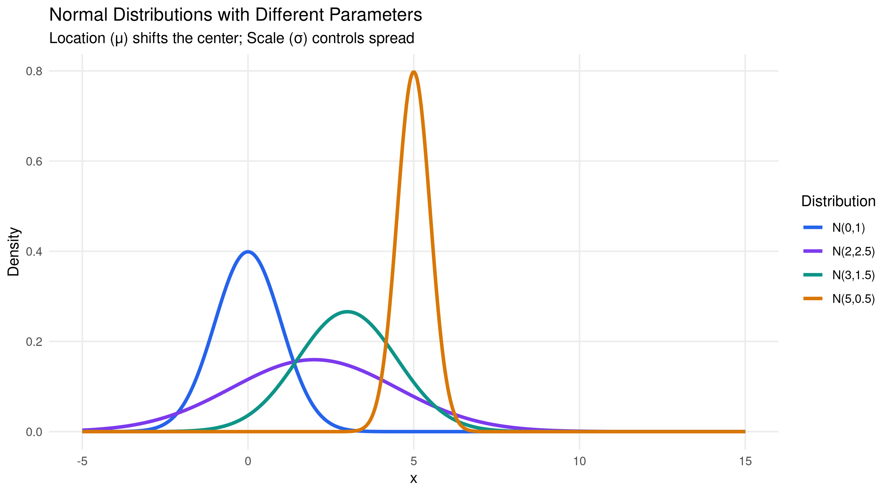
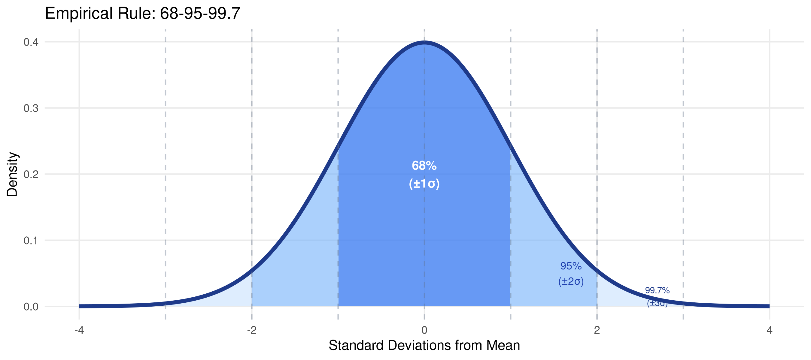
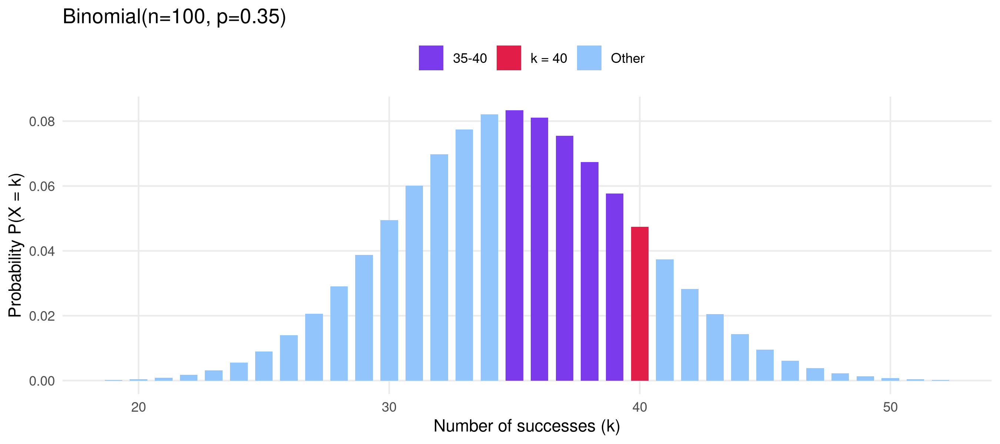
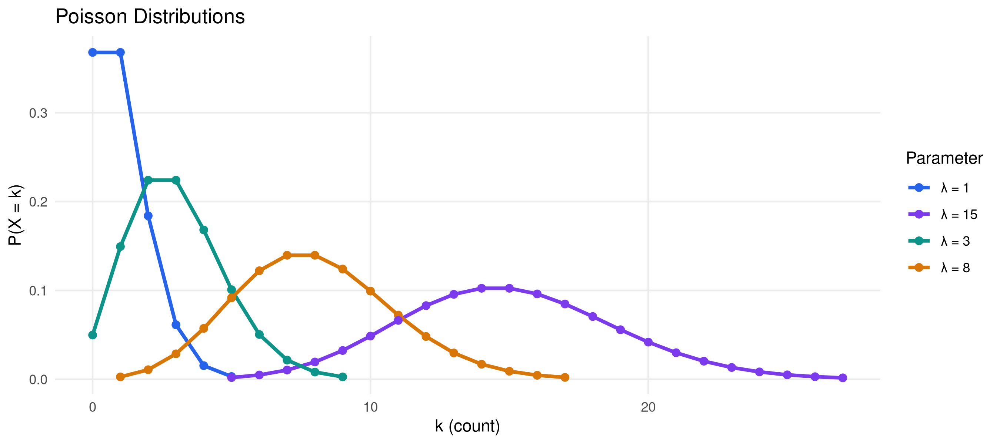
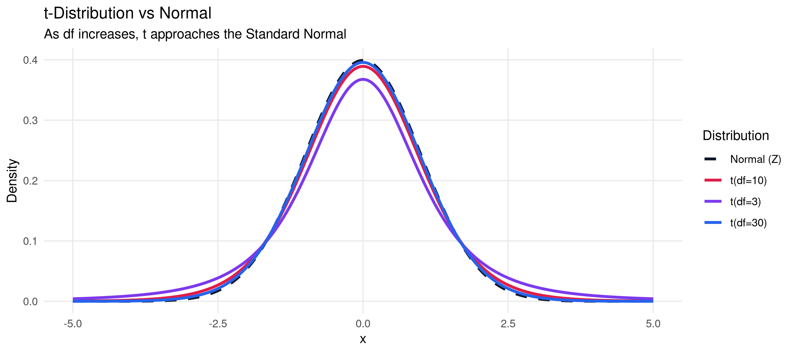

Code
library(tidyverse)
library(knitr)Pawan Jangra
January 20, 2025
Learning Objectives: Understand core probability concepts, work with common distributions (Normal, Binomial, Poisson, t), and apply these in real-world contexts using R’s built-in distribution functions.
Every distribution in R has four functions:
| Prefix | Function | Returns |
|---|---|---|
d |
dnorm(x) |
Probability density at x |
p |
pnorm(q) |
P(X ≤ q) — CDF |
q |
qnorm(p) |
Quantile (inverse CDF) |
r |
rnorm(n) |
n random samples |
The Normal distribution is the cornerstone of statistical inference — thanks to the Central Limit Theorem.
# Compare Normal distributions with different parameters
x_vals <- seq(-5, 15, length.out = 500)
normal_df <- bind_rows(
data.frame(x=x_vals, density=dnorm(x_vals, mean=0, sd=1), label="N(0,1)"),
data.frame(x=x_vals, density=dnorm(x_vals, mean=3, sd=1.5), label="N(3,1.5)"),
data.frame(x=x_vals, density=dnorm(x_vals, mean=5, sd=0.5), label="N(5,0.5)"),
data.frame(x=x_vals, density=dnorm(x_vals, mean=2, sd=2.5), label="N(2,2.5)")
)
ggplot(normal_df, aes(x=x, y=density, color=label)) +
geom_line(linewidth=1.2) +
scale_color_manual(values=c("#2563eb","#7c3aed","#0d9488","#d97706")) +
labs(title="Normal Distributions with Different Parameters",
subtitle="Location (μ) shifts the center; Scale (σ) controls spread",
x="x", y="Density", color="Distribution") +
theme_minimal(base_size=11) +
theme(legend.position="right", panel.grid.minor=element_blank())
x <- seq(-4, 4, length.out=1000)
df_norm <- data.frame(x=x, y=dnorm(x))
ggplot(df_norm, aes(x,y)) +
geom_area(data=filter(df_norm, x >= -3 & x <= 3), fill="#93c5fd", alpha=0.3) +
geom_area(data=filter(df_norm, x >= -2 & x <= 2), fill="#60a5fa", alpha=0.4) +
geom_area(data=filter(df_norm, x >= -1 & x <= 1), fill="#2563eb", alpha=0.5) +
geom_line(linewidth=1.5, color="#1e3a8a") +
geom_vline(xintercept=c(-3,-2,-1,0,1,2,3), linetype="dashed",
alpha=0.4, color="#64748b") +
annotate("text", x=0, y=0.2, label="68%\n(±1σ)", size=3.5, fontface="bold", color="white") +
annotate("text", x=1.7, y=0.05, label="95%\n(±2σ)", size=3, color="#1e40af") +
annotate("text", x=2.7, y=0.015, label="99.7%\n(±3σ)", size=2.5, color="#1e3a8a") +
labs(title="Empirical Rule: 68-95-99.7",
x="Standard Deviations from Mean", y="Density") +
theme_minimal(base_size=11) +
theme(panel.grid.minor=element_blank())
P(Z ≤ 1.96) = 0.975 P(-1.96 ≤ Z ≤ 1.96) = 0.95 P(Z > 2.33) = 0.0099 95th percentile (z): 1.6449 99th percentile (z): 2.3263 Used when we have n independent trials, each with probability p of success.
Application: In a survey of 100 households, if 35% own agricultural land, what’s the probability that exactly 40 own land?
n_trials <- 100
p_success <- 0.35
binom_df <- data.frame(
k = 0:n_trials,
prob = dbinom(0:n_trials, n_trials, p_success)
) |> filter(prob > 0.0001)
# Highlight specific outcomes
binom_df <- binom_df |>
mutate(highlight = case_when(
k == 40 ~ "k = 40",
k >= 35 & k <= 40 ~ "35-40",
TRUE ~ "Other"
))
ggplot(binom_df, aes(x=k, y=prob, fill=highlight)) +
geom_col(width=0.7) +
scale_fill_manual(values=c("k = 40"="#e11d48","35-40"="#7c3aed","Other"="#93c5fd"),
name="") +
labs(title=paste0("Binomial(n=", n_trials, ", p=", p_success, ")"),
x="Number of successes (k)", y="Probability P(X = k)") +
theme_minimal(base_size=11) +
theme(legend.position="top", panel.grid.minor=element_blank())
P(X = 40) = 0.0474
P(X ≥ 40) = 0.1724
Expected value E(X) = np = 35
SD(X) = √(np(1-p)) = 4.77Used for count data — events happening in a fixed interval.
Application: If a field surveyor visits an average of 8 households per hour, what’s the probability of visiting exactly 10 in an hour?
lambdas <- c(1, 3, 8, 15)
pois_df <- expand.grid(
k = 0:30,
lambda = lambdas
) |>
mutate(
prob = dpois(k, lambda),
label = paste0("λ = ", lambda)
) |> filter(prob > 0.001)
ggplot(pois_df, aes(x=k, y=prob, color=label)) +
geom_line(linewidth=1.1) +
geom_point(size=2) +
scale_color_manual(values=c("#2563eb","#7c3aed","#0d9488","#d97706")) +
labs(title="Poisson Distributions",
x="k (count)", y="P(X = k)", color="Parameter") +
theme_minimal(base_size=11) +
theme(legend.position="right", panel.grid.minor=element_blank())
Used when the population standard deviation is unknown (which is almost always in practice).
x <- seq(-5, 5, length.out=500)
t_df <- bind_rows(
data.frame(x=x, y=dnorm(x), dist="Normal (Z)"),
data.frame(x=x, y=dt(x, df=3), dist="t(df=3)"),
data.frame(x=x, y=dt(x, df=10), dist="t(df=10)"),
data.frame(x=x, y=dt(x, df=30), dist="t(df=30)")
)
ggplot(t_df, aes(x, y, color=dist, linetype=dist)) +
geom_line(linewidth=1.1) +
scale_color_manual(values=c("#0f172a","#e11d48","#7c3aed","#2563eb")) +
scale_linetype_manual(values=c("dashed","solid","solid","solid")) +
labs(title="t-Distribution vs Normal",
subtitle="As df increases, t approaches the Standard Normal",
x="x", y="Density", color="Distribution", linetype="Distribution") +
theme_minimal(base_size=11) +
theme(legend.position="right", panel.grid.minor=element_blank())
t-critical values (two-tailed, α=0.05): df= 5: t = 2.5706
df= 10: t = 2.2281
df= 20: t = 2.0860
df= 30: t = 2.0423
df= 60: t = 2.0003
df=120: t = 1.9799 Normal: z = 1.9600---
title: "Chapter 2: Probability & Distributions"
description: "Probability theory, common distributions, and their applications in statistical analysis using R."
author: "Pawan Jangra"
date: "2025-01-20"
toc: true
number-sections: true
---
> **Learning Objectives:** Understand core probability concepts, work with common distributions (Normal, Binomial, Poisson, t), and apply these in real-world contexts using R's built-in distribution functions.
## Probability Fundamentals
Every distribution in R has four functions:
| Prefix | Function | Returns |
|--------|----------|---------|
| `d` | `dnorm(x)` | Probability density at x |
| `p` | `pnorm(q)` | P(X ≤ q) — CDF |
| `q` | `qnorm(p)` | Quantile (inverse CDF) |
| `r` | `rnorm(n)` | n random samples |
```{r setup}
#| message: false
library(tidyverse)
library(knitr)
```
## The Normal Distribution
The Normal distribution is the cornerstone of statistical inference — thanks to the Central Limit Theorem.
```{r normal-dist}
#| fig-height: 5
# Compare Normal distributions with different parameters
x_vals <- seq(-5, 15, length.out = 500)
normal_df <- bind_rows(
data.frame(x=x_vals, density=dnorm(x_vals, mean=0, sd=1), label="N(0,1)"),
data.frame(x=x_vals, density=dnorm(x_vals, mean=3, sd=1.5), label="N(3,1.5)"),
data.frame(x=x_vals, density=dnorm(x_vals, mean=5, sd=0.5), label="N(5,0.5)"),
data.frame(x=x_vals, density=dnorm(x_vals, mean=2, sd=2.5), label="N(2,2.5)")
)
ggplot(normal_df, aes(x=x, y=density, color=label)) +
geom_line(linewidth=1.2) +
scale_color_manual(values=c("#2563eb","#7c3aed","#0d9488","#d97706")) +
labs(title="Normal Distributions with Different Parameters",
subtitle="Location (μ) shifts the center; Scale (σ) controls spread",
x="x", y="Density", color="Distribution") +
theme_minimal(base_size=11) +
theme(legend.position="right", panel.grid.minor=element_blank())
```
### The 68-95-99.7 Rule
```{r empirical-rule}
#| fig-height: 4
x <- seq(-4, 4, length.out=1000)
df_norm <- data.frame(x=x, y=dnorm(x))
ggplot(df_norm, aes(x,y)) +
geom_area(data=filter(df_norm, x >= -3 & x <= 3), fill="#93c5fd", alpha=0.3) +
geom_area(data=filter(df_norm, x >= -2 & x <= 2), fill="#60a5fa", alpha=0.4) +
geom_area(data=filter(df_norm, x >= -1 & x <= 1), fill="#2563eb", alpha=0.5) +
geom_line(linewidth=1.5, color="#1e3a8a") +
geom_vline(xintercept=c(-3,-2,-1,0,1,2,3), linetype="dashed",
alpha=0.4, color="#64748b") +
annotate("text", x=0, y=0.2, label="68%\n(±1σ)", size=3.5, fontface="bold", color="white") +
annotate("text", x=1.7, y=0.05, label="95%\n(±2σ)", size=3, color="#1e40af") +
annotate("text", x=2.7, y=0.015, label="99.7%\n(±3σ)", size=2.5, color="#1e3a8a") +
labs(title="Empirical Rule: 68-95-99.7",
x="Standard Deviations from Mean", y="Density") +
theme_minimal(base_size=11) +
theme(panel.grid.minor=element_blank())
```
```{r prob-calculations}
# Probability calculations
cat("P(Z ≤ 1.96) =", round(pnorm(1.96), 4), "\n")
cat("P(-1.96 ≤ Z ≤ 1.96) =", round(pnorm(1.96) - pnorm(-1.96), 4), "\n")
cat("P(Z > 2.33) =", round(1 - pnorm(2.33), 4), "\n")
cat("95th percentile (z):", round(qnorm(0.95), 4), "\n")
cat("99th percentile (z):", round(qnorm(0.99), 4), "\n")
```
## Binomial Distribution
Used when we have **n independent trials**, each with probability **p** of success.
**Application:** In a survey of 100 households, if 35% own agricultural land, what's the probability that exactly 40 own land?
```{r binomial}
#| fig-height: 4
n_trials <- 100
p_success <- 0.35
binom_df <- data.frame(
k = 0:n_trials,
prob = dbinom(0:n_trials, n_trials, p_success)
) |> filter(prob > 0.0001)
# Highlight specific outcomes
binom_df <- binom_df |>
mutate(highlight = case_when(
k == 40 ~ "k = 40",
k >= 35 & k <= 40 ~ "35-40",
TRUE ~ "Other"
))
ggplot(binom_df, aes(x=k, y=prob, fill=highlight)) +
geom_col(width=0.7) +
scale_fill_manual(values=c("k = 40"="#e11d48","35-40"="#7c3aed","Other"="#93c5fd"),
name="") +
labs(title=paste0("Binomial(n=", n_trials, ", p=", p_success, ")"),
x="Number of successes (k)", y="Probability P(X = k)") +
theme_minimal(base_size=11) +
theme(legend.position="top", panel.grid.minor=element_blank())
cat("P(X = 40) =", round(dbinom(40, 100, 0.35), 4))
cat("\nP(X ≥ 40) =", round(1 - pbinom(39, 100, 0.35), 4))
cat("\nExpected value E(X) = np =", 100*0.35)
cat("\nSD(X) = √(np(1-p)) =", round(sqrt(100*0.35*0.65), 3))
```
## Poisson Distribution
Used for **count data** — events happening in a fixed interval.
**Application:** If a field surveyor visits an average of 8 households per hour, what's the probability of visiting exactly 10 in an hour?
```{r poisson}
#| fig-height: 4
lambdas <- c(1, 3, 8, 15)
pois_df <- expand.grid(
k = 0:30,
lambda = lambdas
) |>
mutate(
prob = dpois(k, lambda),
label = paste0("λ = ", lambda)
) |> filter(prob > 0.001)
ggplot(pois_df, aes(x=k, y=prob, color=label)) +
geom_line(linewidth=1.1) +
geom_point(size=2) +
scale_color_manual(values=c("#2563eb","#7c3aed","#0d9488","#d97706")) +
labs(title="Poisson Distributions",
x="k (count)", y="P(X = k)", color="Parameter") +
theme_minimal(base_size=11) +
theme(legend.position="right", panel.grid.minor=element_blank())
```
## The t-Distribution
Used when the **population standard deviation is unknown** (which is almost always in practice).
```{r t-dist}
#| fig-height: 4
x <- seq(-5, 5, length.out=500)
t_df <- bind_rows(
data.frame(x=x, y=dnorm(x), dist="Normal (Z)"),
data.frame(x=x, y=dt(x, df=3), dist="t(df=3)"),
data.frame(x=x, y=dt(x, df=10), dist="t(df=10)"),
data.frame(x=x, y=dt(x, df=30), dist="t(df=30)")
)
ggplot(t_df, aes(x, y, color=dist, linetype=dist)) +
geom_line(linewidth=1.1) +
scale_color_manual(values=c("#0f172a","#e11d48","#7c3aed","#2563eb")) +
scale_linetype_manual(values=c("dashed","solid","solid","solid")) +
labs(title="t-Distribution vs Normal",
subtitle="As df increases, t approaches the Standard Normal",
x="x", y="Density", color="Distribution", linetype="Distribution") +
theme_minimal(base_size=11) +
theme(legend.position="right", panel.grid.minor=element_blank())
```
```{r t-critical}
# Critical values
cat("t-critical values (two-tailed, α=0.05):\n")
for (df in c(5, 10, 20, 30, 60, 120)) {
cat(sprintf(" df=%3d: t = %.4f\n", df, qt(0.975, df)))
}
cat(sprintf(" Normal: z = %.4f\n", qnorm(0.975)))
```
## Practice Exercises
::: {.callout-tip}
## Try It Yourself
1. **Normal:** If IQ scores are N(100, 15²), find P(IQ > 130) and the 90th percentile
2. **Binomial:** In 200 trials with p=0.25, find the mean, SD, and P(X ≥ 60)
3. **Poisson:** If λ=5 calls/hour, find P(0 calls) and P(X ≥ 8)
4. **t:** For a sample of n=25, find the 95% CI for the mean wage from Chapter 1's data
:::
**Next:** [Chapter 3 — Regression Analysis →](chapter3.html)